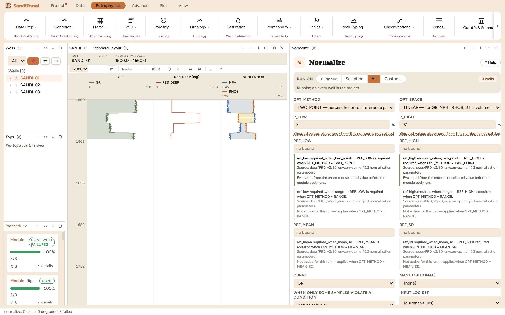
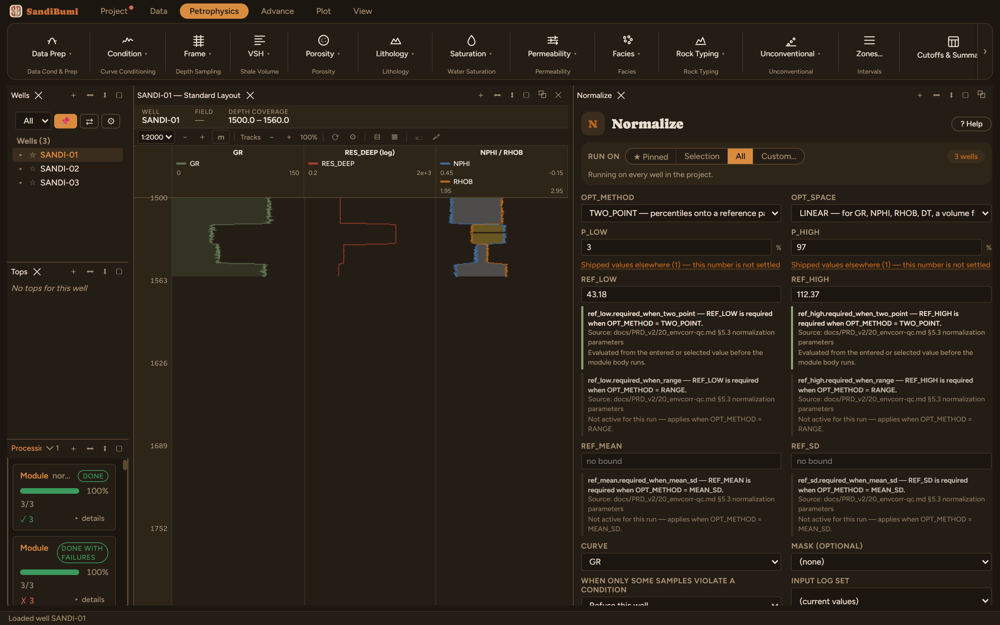

Normalize maps a curve onto a common reference frame so wells can be
compared and pooled. The classic customer is the gamma ray: different logging
vintages report the same shale at different gAPI, so a cutoff picked in one
well means different rock in the next until the wells share a scale. The
module works on any curve, and it absorbed the older GR-specific normalizer,
whose chapter now points here.
The physics
Three methods:
TWO_POINT (the workhorse): read this run's P_LOW and P_HIGH
percentiles of the curve, per well, and map them linearly onto REF_LOW
and REF_HIGH. Percentiles rather than min and max because a single spike
sets a min or a max, and one bad sample would then rescale the whole
well.
RANGE: the same map from the curve's own min and max.
Reproducible, and spike-sensitive by construction; use it only on a
curve already despiked.
MEAN_SD: z-score onto a reference mean and standard
deviation.
The picks and why: the refusal comes first
The reference pair ships absent on purpose, and running without one is
refused before the module runs (0 clean, 3 failed, each well reporting the
missing parameter by name):
normalize did not run: REF_LOW is not set for this run. REF_LOW and
REF_HIGH must both be set - the reference pair IS the normalization, and
there is no value that is right in two fields. Take it from this field's own
multi-well distribution, or from a reference well, and use the same pair for
every well. REF_LOW is required when OPT_METHOD = TWO_POINT. Source:
normalization parameters (precondition ref_low.required_when_two_point)

A pair from one basin is the wrong reference in another, and
normalized output looks plausible either way, so the module refuses to
guess.
Deriving the pair is one query in the Database Inspector's read-only SQL
panel, over the field's pooled distribution:
SELECT round(quantile_cont(gr, 0.03), 2), round(quantile_cont(gr, 0.97), 2)
FROM standard_curves WHERE NOT isnan(gr)
which on these wells gives 43.18 / 112.37 gAPI, the
walkthrough's reference pair. On a real study, compute it over a common
reference interval containing comparable rock, and then use the same pair for
every well in the study, which is the entire point.
P_LOW 3, P_HIGH 97 (shipped): where each well's distribution is
anchored. Run live, what changes when the anchors move to P5/P95 with the
same reference pair: each well's P3/P97 lands at 42.45 to 42.73 and
112.87 to 112.91 instead of exactly on the pair, because the anchors now
sit inside the tails and the mapped extremes overshoot the reference
values. Anchor choice and reference pair are one decision made in two
places; report both.
Step by step
Open Petrophysics ▸ Condition ▸ Normalize and select the
curve.
Derive the field reference pair (query above, or an agreed reference
well) and enter REF_LOW and REF_HIGH, citing the derivation in the
custody line.
Press Run Normalize.
The reference fields ship empty. What goes in them is the
study's decision, recorded with its source.
Reading the result
3 clean, and the verification is beautifully strict: after the run,
every well's P3/P97 of the normalized curve reads exactly 43.18 /
112.37, the reference pair, to the decimal. That coincidence across wells
is the definition of normalized, and the same query per well is the QC:
SELECT w.well_name,
round(quantile_cont(c.value, 0.03), 2), round(quantile_cont(c.value, 0.97), 2)
FROM computed_curves c JOIN wells w ON w.well_id = c.well_id
WHERE c.curve_name = 'GR_N' AND NOT isnan(c.value)
GROUP BY w.well_name

Three wells, one scale: the anchors of every normalized well
coincide on the reference pair.
QC and pitfalls
These example wells were already consistent (per-well P3/P97 within
0.4 gAPI before normalizing); a study that needs this module will
see spreads of tens of gAPI, and the after-run coincidence check matters
all the more.
Mask the run to a common reference interval so every well's percentiles
are measured over comparable rock; a well whose logged section is mostly
sand anchors its P97 on the wrong population.
Normalized output always looks plausible, including when the pair is
wrong for the basin. That is why the pair is refused rather than
defaulted, and why the custody line asks where yours came from.